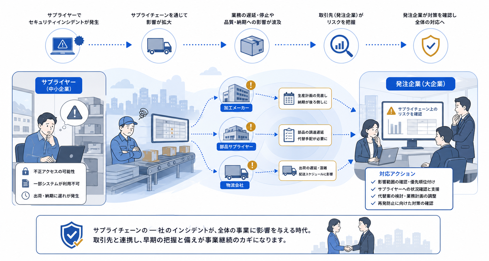
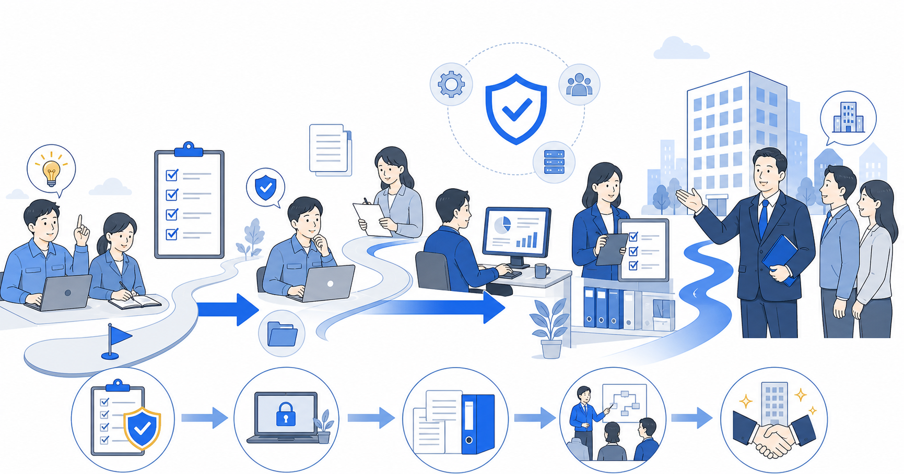
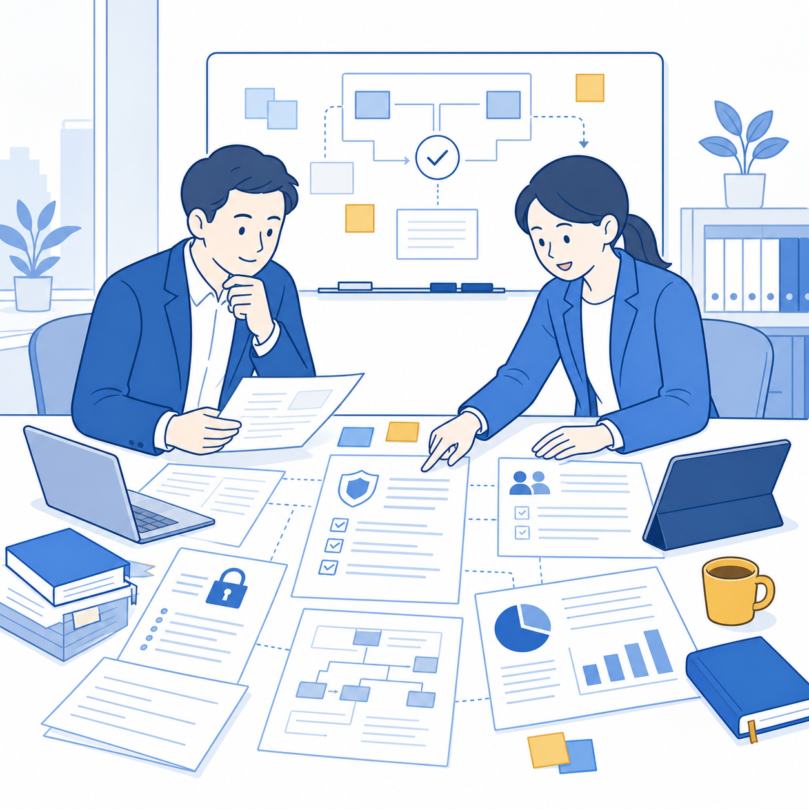
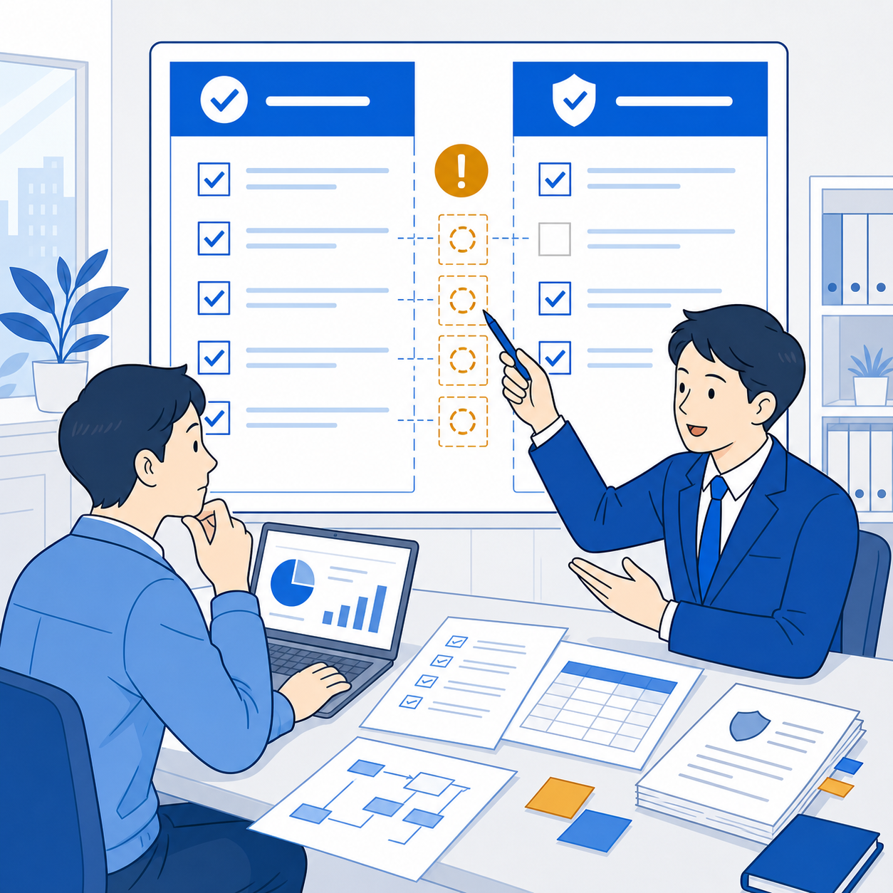
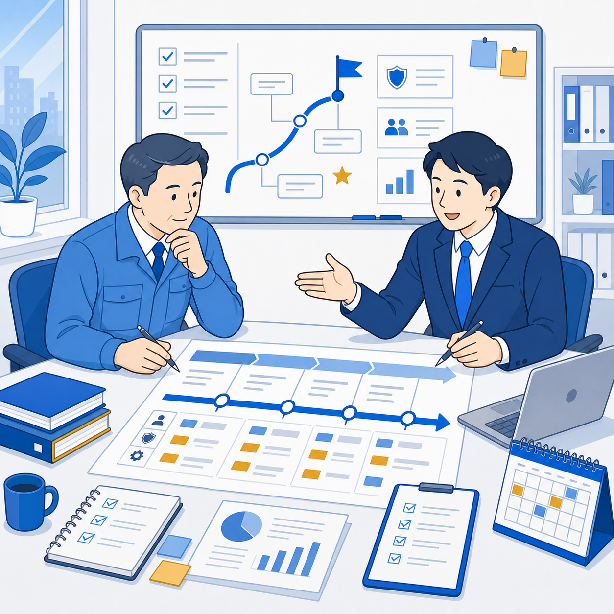
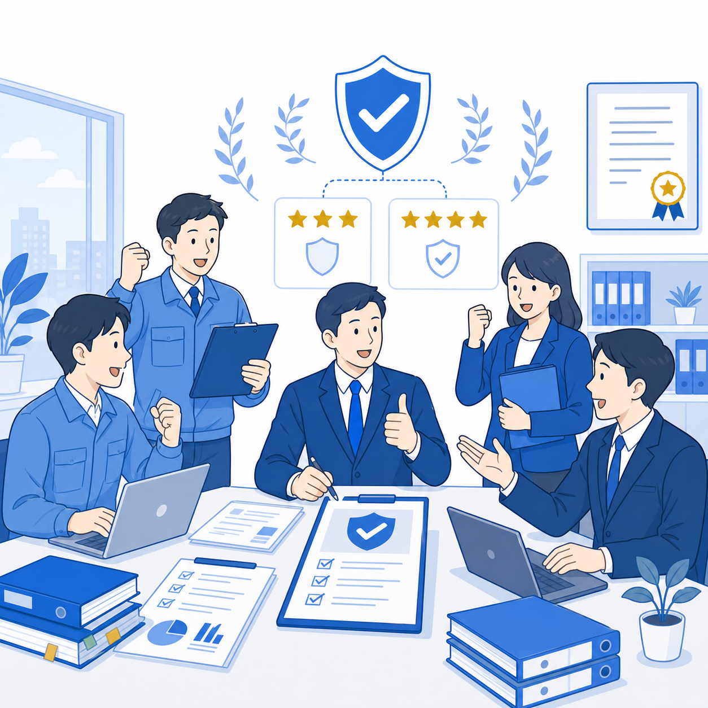
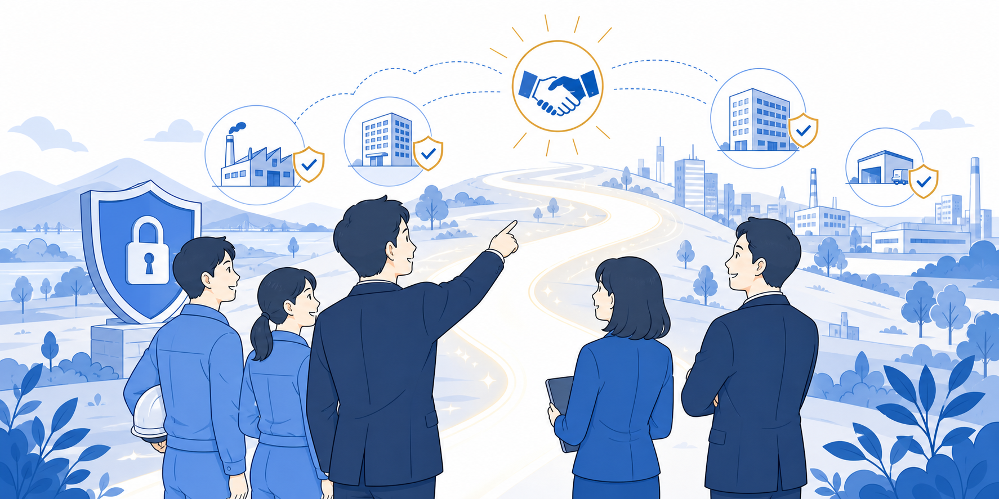

01
取引先から急に対応を求められたら不安
求められるレベルや期限が分からず、準備が間に合うか心配。
サプライチェーン強化に向けたセキュリティ対策評価制度（SCS評価制度）への対応を、現状分析から社内ルール整備までサポートします。
まずは無料相談するサイバー攻撃は、対策が比較的弱い取引先や委託先を経由して広がります。企業規模に関係なく、サプライチェーン全体で備えることが必要です。

企業のセキュリティ対策状況を共通基準で評価し、取引先が安心して取引できる環境づくりを目指す制度です。

新しい制度だからこそ、どこから着手すべきか分からないのは自然なことです。
求められるレベルや期限が分からず、準備が間に合うか心配。
情報が少なく、優先順位や進め方が見えにくい。
ISMS・Pマークの運用を活かせるのか判断できない。
現状を丁寧に整理し、無理なく取り組める現実的な対策を一緒につくります。

現在のセキュリティ対策や社内ルール、運用状況を整理し、全体像を把握します。

SCS評価制度の要求事項と現状を照らし合わせ、不足している項目を明確にします。

企業ごとの環境や既存の取り組みを活かし、優先順位のある実行計画を設計します。
規程や手順書を整え、現場で無理なく続けられる運用づくりを支援します。

評価・確認に向けた準備から是正対応まで、取得・登録を伴走支援します。
求められる前に備えることが、取引先からの信頼と新しいビジネス機会につながります。

難しい制度を分かりやすく整理し、企業ごとの現実に合わせて伴走します。
3,000社以上の支援実績から培ったノウハウ。
情報セキュリティ認証支援で積み重ねた確かな実績。
無駄や重複を抑えた現実的な制度対応。
代行から伴走まで状況に応じて最適化。
まず現状を整理したい段階からでも、安心してご相談いただけます。
専門家が貴社の状況を伺い、必要な対応を分かりやすく整理します。
制度対応についての疑問や不安を、お気軽にお聞かせください。